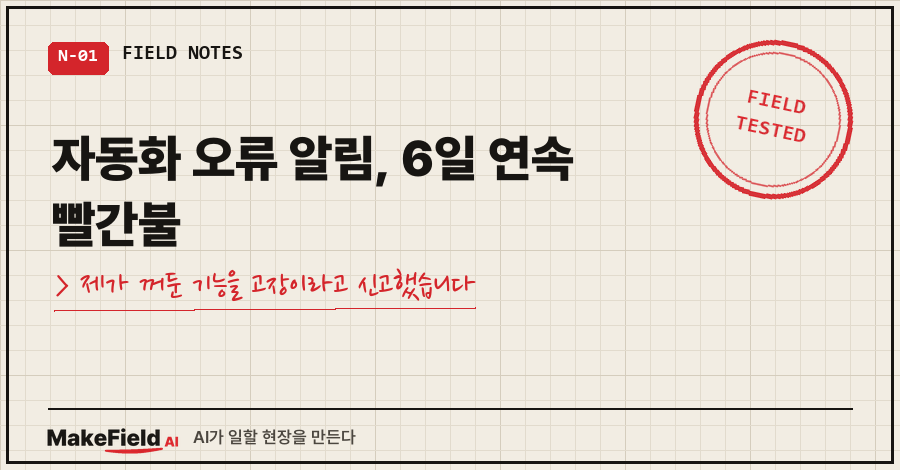
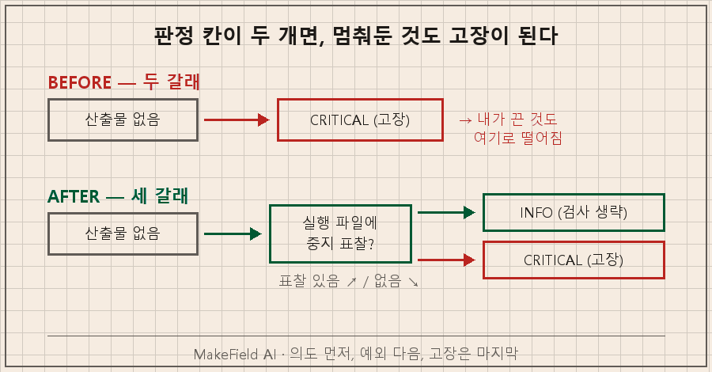
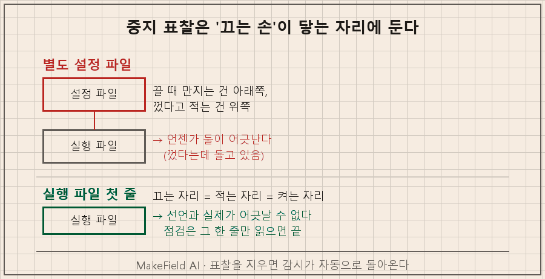
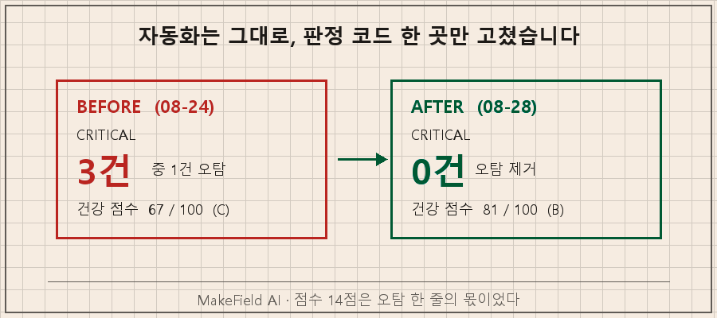

빨간 줄이 여섯 장 연속으로 찍혀 있었습니다. 매일 새벽에 도는 점검이 "미실행 또는 조기실패 의심"이라고 매일 알려왔거든요. 열어보니 고장이 아니라 제가 8월 17일에 손으로 꺼둔 기능이었습니다.
한 줄로 먼저 답을 적을게요.
자동화 오류 알림이 며칠씩 같은 문구로 뜬다면, 점검이 상태를 두 갈래로만 나누고 있는지 먼저 보세요. 도는가·안 도는가 둘로만 판정하면 "일부러 멈춰둔 것"이 앉을 칸이 없어서 전부 고장 쪽으로 떨어집니다. 필요한 건 세 번째 칸이에요.
제 본업은 공장 설비 제어입니다. 열다섯 해쯤 하다 보니 몸에 밴 절차가 하나 있는데요. 정비하려고 설비를 세울 때는 차단기에 표찰부터 겁니다. "정비 중, 조작 금지"라고 적힌 딱지요. 그게 없으면 다음 사람이 와서 멈춰 있는 걸 보고 그냥 다시 올려버리거든요.
정작 제 PC에 굴리는 자동화에는 그 표찰 칸을 안 만들어뒀더라고요..
2026년 8월 기준이고요. 매일 정해진 시각에 돌면서 파일 하나를 만들어두는 자동화와, 그게 잘 돌았는지 확인하는 점검 스크립트를 따로 두고 있다면 종류를 안 가리고 그대로 해당됩니다.
1. 여섯 장 연속으로 같은 빨간 줄이 찍혔어요
점검 보고서에서 해당 줄만 뽑아봤습니다. 날짜만 다르고 문구가 똑같아요.
[08-18] CRITICAL 영어 레슨: 오늘자 산출물 없음 — 미실행/조기실패 의심
[08-19] CRITICAL 영어 레슨: 오늘자 산출물 없음 — 미실행/조기실패 의심
[08-20] CRITICAL 영어 레슨: 오늘자 산출물 없음 — 미실행/조기실패 의심
[08-21] CRITICAL 영어 레슨: 오늘자 산출물 없음 — 미실행/조기실패 의심
[08-22] CRITICAL 영어 레슨: 오늘자 산출물 없음 — 미실행/조기실패 의심
[08-23] 영어 레슨: 휴무일 — 신선도 검사 생략
[08-24] CRITICAL 영어 레슨: 오늘자 산출물 없음 — 미실행/조기실패 의심이 목록에서 제일 웃긴 줄은 08-23입니다. 일요일이라 안 돈다는 건 점검이 알고 있었어요. 요일 예외는 이미 들어 있었던 겁니다. 그런데 "주인이 껐다"는 예외는 없었어요.
점수도 같이 눌렸습니다. 08-18부터 사흘은 77점으로 B등급, 그 뒤로는 67점 C등급이었어요. 아무 문제 없는 항목 하나가 등급을 한 칸 끌어내리고 있었던 거예요.
2. 고장이 아니라 제가 끈 거였습니다
8월 17일에 개인 사정으로 그 자동화를 멈춰뒀습니다. 대충 지운 것도 아니에요. 실행 파일 맨 앞에 이렇게 적어놓기까지 했거든요.
REM [2026-08-17 PAUSED - recovery period] English automation OFF.
REM Uncomment 2 lines below to resume.문제는 저 줄을 사람이 읽으라고 적어놨다는 데 있었어요. 점검 스크립트는 그 파일을 열어보지도 않습니다. 점검이 보는 건 결과가 쌓이는 폴더 하나뿐이었거든요. 폴더에 오늘 날짜 파일이 있으면 정상, 없으면 고장. 딱 두 갈래였습니다.
여기서 정직하게 인정할 부분이 있어요. 이건 자동화가 틀린 게 아니라 판정 칸이 부족했던 겁니다. 스크립트는 시킨 대로 정확히 일했어요. "안 만들어졌다"는 사실도 맞고요. 틀린 건 그 사실 하나로 고장이라고 단정한 쪽입니다.

3. 진짜 고장은 그 옆줄에 있었습니다
오탐의 진짜 대가는 알림이 하나 늘어난 게 아니었어요. 같은 날 보고서를 다시 보면 압니다.
## CRITICAL (즉시 조치 필요)
- 영어 레슨: 오늘자 산출물 없음 — 미실행/조기실패 의심 ← 오탐
- 스케줄러 실패 감지: 예약 작업 9건(종료 코드 동일) ← 진짜08-24에는 다른 자동화 하나가 정말로 산출물을 못 만든 것도 같이 올라와 있었고요.
맨 윗줄이 6일 내내 같은 문구로 붙어 있으면 그 아래 줄까지 같이 배경이 됩니다. 저는 그 며칠 동안 "또 그거네" 하고 목록 전체를 닫았어요.. 오탐 한 줄이 그 목록을 읽지 않는 습관을 만든 겁니다.
점수도 마찬가지예요. 정상인데 C등급이 뜨면, 그다음부터는 등급을 봐도 아무 판단을 못 하게 됩니다.
4. 세 번째 상태를 만들었습니다
고친 방식은 단순해요. 판정을 세 칸으로 늘렸습니다.
| 상태 | 판정 근거 | 알림 등급 |
|---|---|---|
| 정상 | 오늘자 산출물 있음 | OK |
| 의도적 중지 | 실행 파일에 중지 표찰 있음 | INFO (검사 생략) |
| 고장 | 표찰 없는데 산출물 없음 | CRITICAL |
핵심은 표찰을 어디에 두느냐였어요. 저는 별도 설정 파일을 새로 만들지 않고 끈 자리에 남겼습니다. 그러니까 실행 파일 첫머리요.
이유가 있어요. 끄는 사람은 어차피 그 파일을 열거든요. 켤 때도 그 파일을 엽니다. 선언과 실제 상태가 같은 자리에 있으면 둘이 어긋날 일이 없어요. 설정 파일을 따로 두면 언젠가는 "껐다고 적혀 있는데 실제로는 도는" 상태가 옵니다.
점검 코드는 이렇게 됐습니다. 파이썬이지만 다른 언어로 옮겨도 구조는 같아요.
def paused_reason(batch_path):
"""실행 파일 앞부분에 중지 표찰이 있으면 그 줄을 돌려준다."""
if not batch_path.exists():
return None
head = batch_path.read_text(encoding="utf-8", errors="ignore")[:800]
for line in head.splitlines():
if "PAUSED" in line.upper():
return line.strip()
return None
reason = paused_reason(batch_path)
if reason:
report.info(f"{label}: 의도적 중지 상태 — 신선도 검사 생략 ({reason})")
elif now.weekday() == skip_weekday:
report.info(f"{label}: 휴무일 — 신선도 검사 생략")
elif not fresh_files:
report.critical(f"{label}: 오늘자 산출물 없음 — 미실행/조기실패 의심")
else:
report.ok(f"{label}: 오늘자 산출물 확인")순서가 전부입니다. 의도를 먼저 확인하고, 예외를 확인하고, 그다음에 고장을 의심해요. 표찰 문구를 알림에 그대로 실어 보내는 것도 일부러 그렇게 했습니다. 몇 달 뒤에 "이거 왜 꺼져 있지?"를 스스로 답하게 하려고요.

확인 방법 — 이렇게 나오면 성공입니다
고쳤다는 말은 다음 실행 결과로 증명해야죠. 판정 줄이 CRITICAL에서 INFO로 내려가고, 문구에 중지 사유가 같이 실려 있으면 된 겁니다.
[INFO] 영어 레슨: 의도적 중지 상태 — 신선도 검사 생략
([2026-08-17 PAUSED - recovery period] English automation OFF.)
CRITICAL 0 / 건강 점수 81/100 (B 등급)67점 C등급이던 게 81점 B등급이 됐어요. 자동화는 하나도 안 고쳤는데 말이죠. 점수 14점이 오탐 한 줄 몫이었던 겁니다!
확인할 때 같이 볼 것 하나 더요. 표찰을 임시로 지우고 한 번 돌려보세요. 그때 다시 CRITICAL이 떠야 정상입니다. 안 뜨면 예외가 너무 넓게 잡힌 거예요.

이런 게 궁금하실 것 같아서
Q. 그냥 점검 대상 목록에서 빼면 되는 거 아닌가요?
그게 제일 흔한 처방인데 저는 안 씁니다. 목록에서 빼면 그 자동화는 다시 켠 뒤에도 조용히 감시 밖에 남거든요. 다시 켰는데 안 도는 상황을 아무도 안 보게 되는 거예요. 표찰 방식은 표찰만 지우면 감시가 자동으로 돌아옵니다.
Q. 며칠 이상 같은 경보가 뜨면 알아서 무시하게 만들면요?
그건 오탐을 줄이는 게 아니라 경보를 무디게 만드는 쪽이에요. 진짜 고장도 며칠씩 안 고쳐지면 똑같이 조용해집니다. 문제는 반복이 아니라 판정이 틀린 거니까 판정을 고쳐야 해요.
Q. 표찰 문구는 뭘로 정하는 게 좋나요?
저는 대문자 한 단어를 정해놓고 그것만 찾게 했습니다. 사람이 쓰는 자유로운 한글 주석까지 인식하게 만들면 오히려 오작동해요. 날짜와 이유는 사람이 읽도록 뒤에 붙이고, 기계는 정해진 한 단어만 봅니다.
자동화 오류 알림이 계속 같은 문구로 뜰 때 의심할 건 자동화가 아니라 점검 쪽의 판정 칸 개수였습니다. 도는가·안 도는가 사이에 "일부러 세워뒀다"를 넣어주는 것, 그리고 그 표찰을 끄는 사람 손이 닿는 자리에 두는 것. 제가 한 일은 그 두 가지가 전부예요.
여러분의 점검 목록에는 몇 달째 그대로 붙어 있는 빨간 줄이 없으신가요? 그게 진짜 고장인지, 아니면 누가 언젠가 꺼둔 건지 오늘 한 번 열어보시면 좋겠습니다.
점검 스크립트를 어떤 사고를 겪고 어떻게 고쳐왔는지는 makefield.ai에 따로 적어두고 있어요.
태그: #자동화오류알림 #자동화점검오탐 #헬스체크설계 #자동화상태판정 #무인자동화 #파이썬자동화 #작업스케줄러 #자동화모니터링 #AI산출물검증 #로그파일확인 #자동화알림설계 #AI에이전트 #개인AI에이전트 #AI에게일시키기 #MakeFieldAI